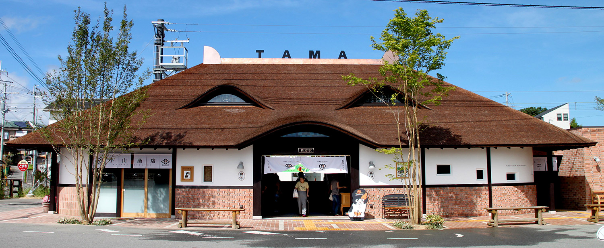
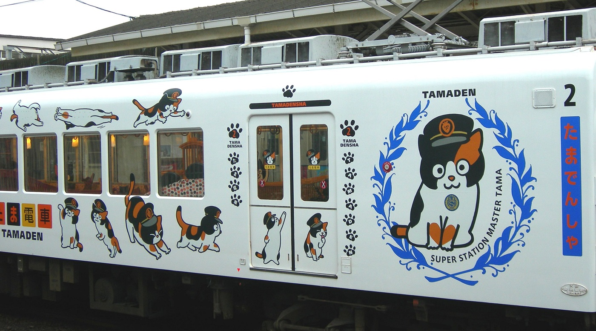

Tama
¿Sabias que hay una gata encargada de una estacion de tren?
Pues si, si la hay, su nombre es Tama y es la gata encargada de la estacion Kishi,
La gata que salvó de la bancarrota a una estación de trenes en Japón.
たま
Historia de Tama

si observan bien, se puede ver que la estacion
tiene forma de gato.
En abril de 2006, el Wakayama Electric Railway convirtió todas las estaciones de la Línea de Kishigawa
de tripulado a no tripulado en un esfuerzo por reducir costos. Los jefes de estación fueron seleccionados entre
los empleados de las empresas locales cercanas a cada estación. Para la estación Kishi,
la tendera del barrio, Toshiko Koyama, fue seleccionada como jefe de estación.
Koyama había adoptado a Tama y a otros gatos callejeros, y les daba de comer en la estación.

Inclusive tiene su probio tren llamado Tama Densha
En enero de 2007, los funcionarios del ferrocarril decidieron nombrar oficialmente a Tama como jefe de estación.
Como jefe de estación su deber principal era saludar a los pasajeros.
El cargo incluye un sombrero de jefe de estación, y en lugar de un salario,
el ferrocarril le ofrecía a Tama comida para gatos gratis.
La publicidad del nombramiento de Tama dio lugar a un incremento de pasajeros de un 17 % en ese mes en comparación con enero de 2006,
las estadísticas de usuarios del transporte público para marzo de 2007 mostró un incremento del 10 % respecto al año anterior.
Un estudio ha calculado que la publicidad en torno a Tama ha aportado 1100 millones de yenes a la economía local.
En enero de 2008, Tama fue ascendido a "súper jefe de estación" en un acto al que asistieron el presidente de la empresa y el alcalde,
como resultado de la promoción, ella es "la única mujer en un puesto de dirección" en la empresa.
Tama falleció el 22 de junio de 2015, a la edad de 16 años, en un hospital para animales en la prefectura de Wakayama,
murió por un fallo cardíaco. Asistieron más de 3000 personas a su funeral, en el que fue venerada como una diosa.
Se le construyó, además, un santuario shinto en las cercanías de la estación.
Fue sucedida por Nitama, otra gata calicó que había sido nombrada aprendiz de jefe de estación en 2012.
AspectoAdfcercAkjde